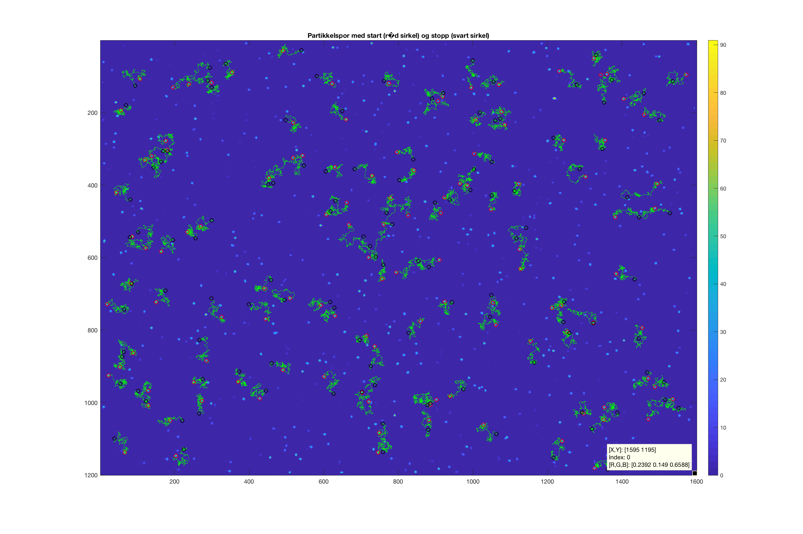
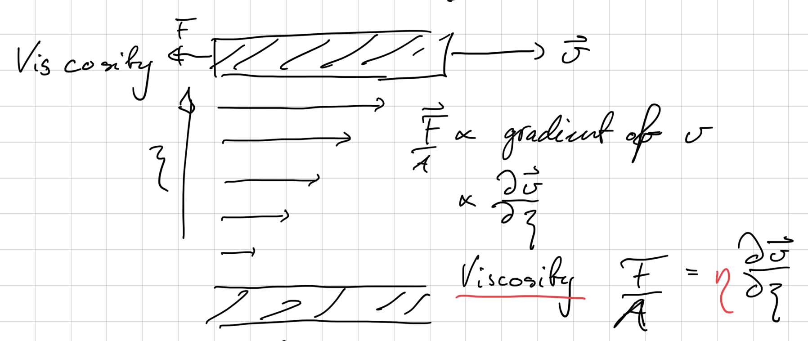
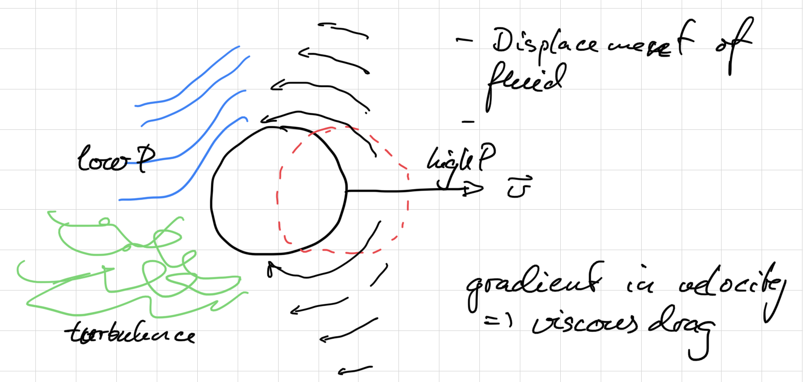
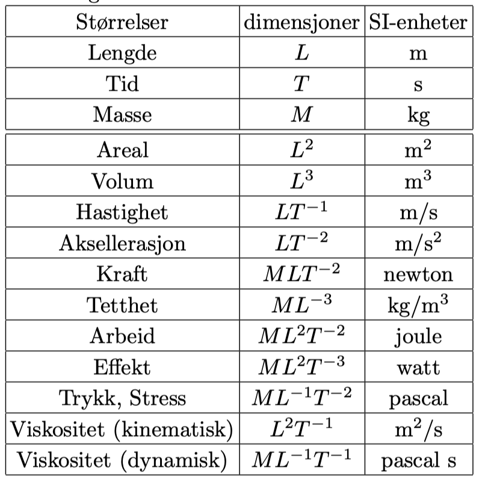
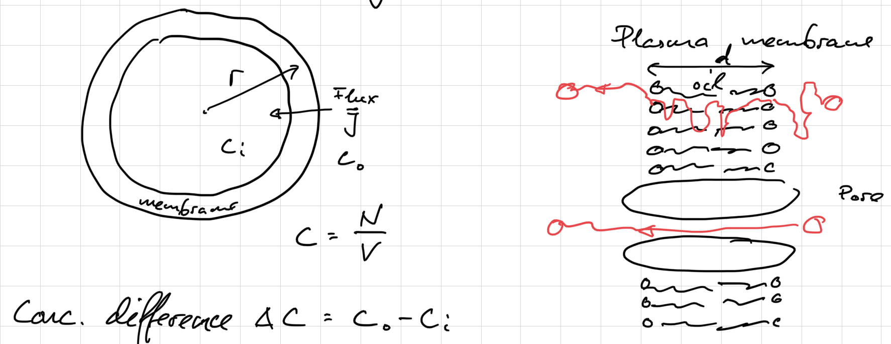
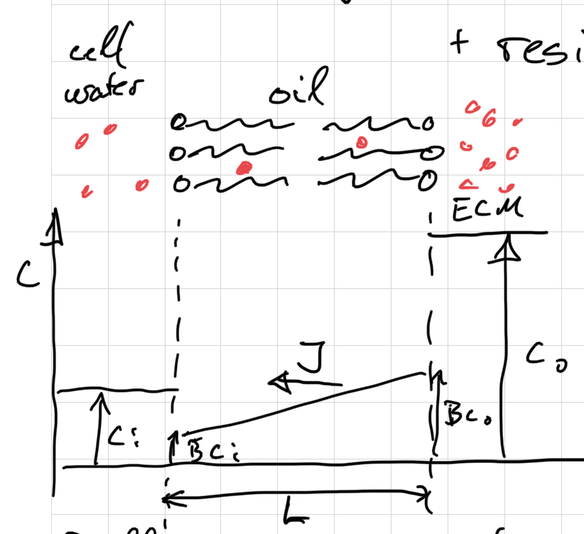
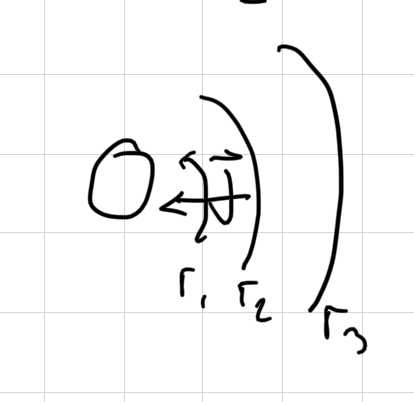
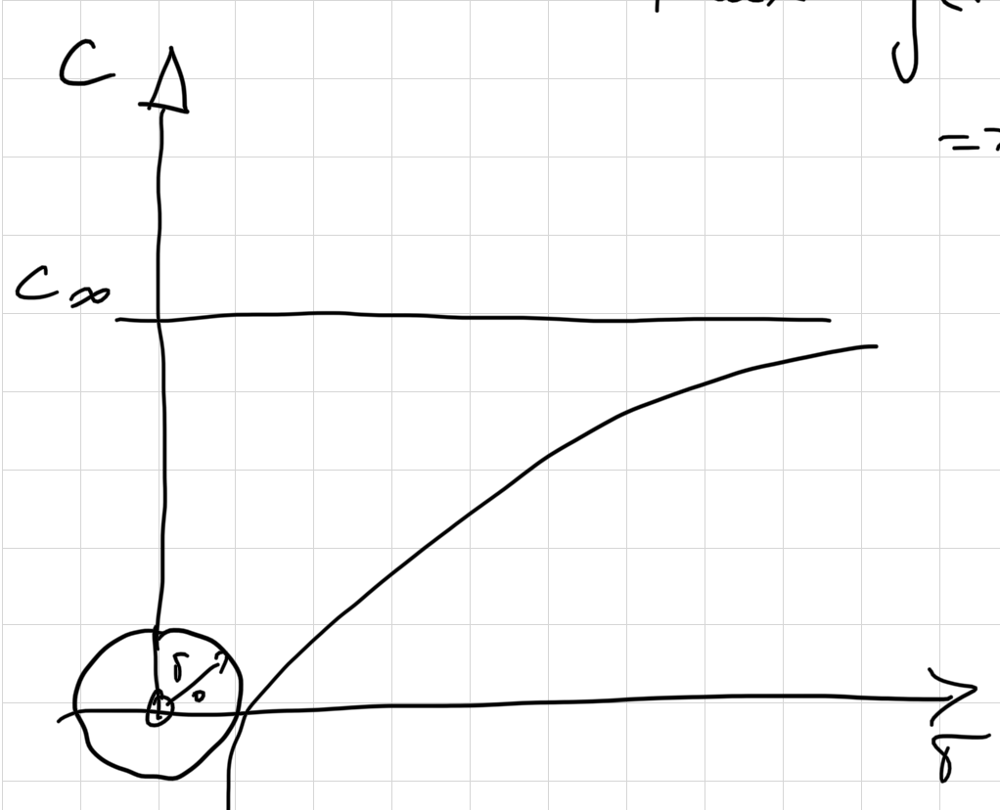
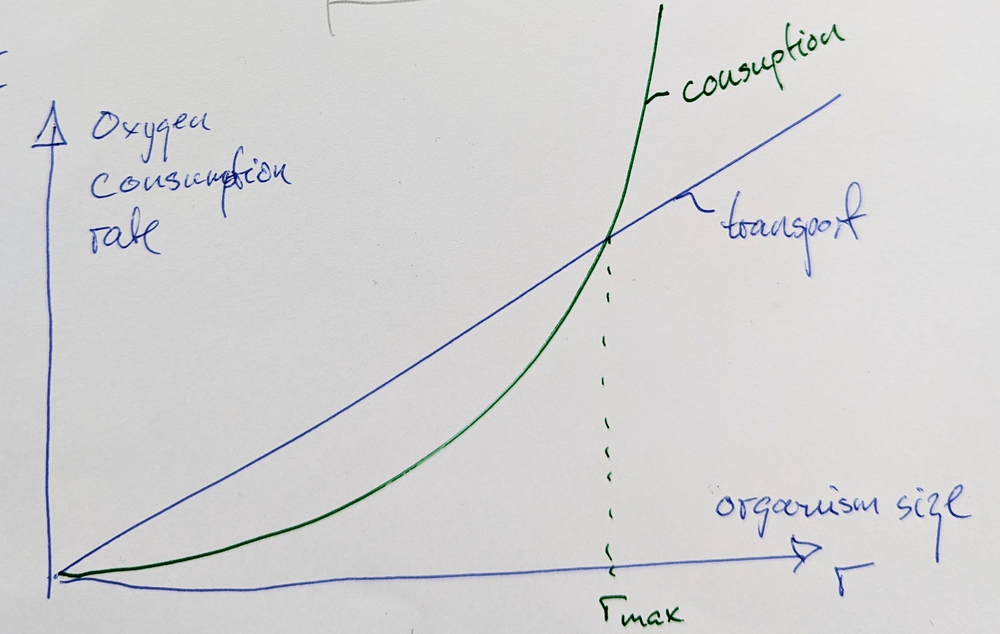

Physics of active and passive motion in biology
Make sure to read chapters 3 and 4 in Nelson! The lab and the project that go with these notes are Lab: Brownian motion and P1: Measuring Boltzmann’s constant with a microscope.

Random walks
A random walk is a model of a fundamental physical process in which a random walker (a particle, an atom, a measurement, an individual) moves in random steps. A typical example is the Brownian motion of small particles due to the thermal motion of atoms. Another example is the spreading of an atom throughout a fluid.
A random walker in 1D moves \(N\) steps back and forth and has random probability of moving left or right. None of the steps are correlated, the step length is \(d\) and the \(i\)-th step is thus \(u_i=\pm d\). The position after \(n\) steps is thus
\[ x_n=x_0+\sum_{i=1}^n u_i \tag{1}\]
The ensemble average of the displacement over a large number of walkers is
\[ \langle x_n-x_0\rangle=\Big\langle \sum_{i=1}^n u_i\Big\rangle=\sum_{i=1}^n\langle u_i\rangle=0. \tag{2}\]
The mean square displacement (MSD) is
\[ \langle (x_n-x_0)^2\rangle=\Big\langle \Big(\sum_{i=1}^n u_i\Big)^2\Big\rangle =\Big\langle \sum_{i=1}^n u_i\sum_{j=1}^n u_j\Big\rangle = \sum_{i=1}^n\langle u_i^2 \rangle+ \sum_{i=1}^n\sum_{j\neq i}\langle u_iu_j\rangle=nd^2. \tag{3}\]
The last sum equals zero because the steps are uncorrelated. This equation says that the mean square displacement increases linearly with the number of steps \(n\) and that the slope of this linear relation is \(d^2\).
Two Python scripts go with this section:
randomwalk_1d.pyis a 1D random walk simulation. It shows the position distribution and the cumulative position distribution at the final time step, and the mean square displacement of the walkers.randomwalk_exercise.pyis a very simple random walk in the \(xy\)-plane. Walkers are placed randomly in part of the plane and then moved in a random direction, with a normally distributed step length, over a given number of time steps. The step length is chosen so that the simulation resembles what you see in the microscope in the lab. The MSD shown at the end is calculated from about 4 times as many particles as those shown in the box. The positions of the particles in the box are also stored, and this list has the same structure as the list of particle positions you will get from the lab experiment.
Diffusion
Diffusion is the mixing of a substance that is unevenly distributed in a medium (gas, liquid or solid). The diffusion equation (here in one dimension) states that the flux \(J\) of the substance is proportional to the gradient of the local density, or concentration \(\rho=n/V\), of the substance:
\[ J=-D\frac{\partial \rho}{\partial x}, \tag{4}\]
where the diffusion coefficient \(D\) is the proportionality constant. The conservation of matter (matter cannot appear or disappear) is expressed by the continuity equation:
\[ \frac{\partial \rho}{\partial t}+\frac{\partial J}{\partial x}=0 \tag{5}\]
Combine the two to get the partial differential equation for diffusion:
\[ \frac{\partial \rho}{\partial t}=D\frac{\partial^2 \rho}{\partial x^2} \tag{6}\]
Start with all particles at \(x=0\) at time \(t=0\): \(\rho(t=0,x)=\delta(x)\), where \(\delta\) is the Dirac delta function. Then the diffusion equation has the solution (you may easily verify this)
\[ \rho(t,x)= \frac{1}{\sqrt{4\pi Dt}}\exp\left(-\frac{x^2}{4Dt}\right) \tag{7}\]
This is a Gaussian distribution with mean \(x=0\) and standard deviation \(\sqrt{2Dt}\). Thus the width of the distribution is proportional to the square root of the diffusion coefficient. When data are sparse and noisy, one always gets a more precise estimate of the width by integrating over all the data. The second moment of the distribution is
\[ \langle x^2\rangle=\int_{-\infty}^{\infty}x^2\rho(t,x)\,dx= 2Dt, \tag{8}\]
where I have used that
\[ \int_{-\infty}^{\infty}x^2e^{-x^2/a}\,dx= \frac{\sqrt{\pi}}{2}a^{3/2}. \]
This result, that the mean square displacement \(\langle x^2\rangle=2Dt\), shows how the random walk and Brownian motion are linked to diffusion. In \(d\) dimensions, \(\langle r^2\rangle=2dDt\); in the microscope we measure in 2D, so \(\langle x^2+y^2\rangle=4Dt\).
Viscous drag
Viscosity
What is viscosity?

Viscous drag on a particle
Drag is the force \(F_d\) from the fluid on a body moving with velocity \(v\). You can also think of \(F_d\) as the force you need to pull on the particle to keep it at a constant velocity \(v\). When biking on a flat road, the force you put into your pedals to keep a constant speed is almost equal to the drag force of the air on your body.

What physical quantities are important?
- The drag force: \(F_d\), \([F_d]=M L T^{-2}\)
- The velocity with respect to the fluid far away: \(v\), \([v]=L T^{-1}\)
- The size of the body: \(r\), \([r]=L\)
- The fluid density: \(\rho\), \([\rho]=M L^{-3}\)
- The fluid viscosity: \(\eta\), \([\eta]=M L^{-1}T^{-1}\)
Dimensional analysis of drag on a particle
All physical quantities have dimensions. In addition we have measurement units, like the SI units, for all these quantities.

The number of independent dimensionless parameters necessary to describe a system is the number of physical quantities minus the number of independent dimensions.
In our case this gives \(5-3=2\) dimensionless quantities that govern the behaviour of the system.
Let us use the other quantities to make a dimensionless parameter with \(F_d\), starting with \(\rho\): \([F_d/\rho]=T^{-2}L^4\). Then remove the dimension \(T\): \([F_d/\rho v^2]=L^2\), and then \(L\):
\[ C_{R}=\frac{F_d}{\rho v^2r^2}. \tag{9}\]
\(C_{R}\) is a dimensionless number that we will call the R drag coefficient.
But we may also use \(\eta\) to remove the mass dimension from \(F_d\): \([F_d/\eta]=L^2T^{-1}\). Then we use \(v\) to remove the time, \([F_d/\eta v]=L\), and then the length:
\[ C_{S}=\frac{F_d}{\eta v r}. \tag{10}\]
\(C_{S}\) is a dimensionless number that we will call the S drag coefficient. The two drag coefficients are pure numbers that depend on the shape of the body. According to Buckingham’s Π theorem we have now found the two dimensionless numbers that are needed to describe the system.
Stokes and Reynolds drag
But these two dimensionless numbers correspond to two very different drag forces. How can they both describe the same physical phenomenon? They describe two different ways the fluid can react to the moving body: either flowing smoothly as a laminar flow around the body, or whirling turbulently in the wake of the body. Let us look at the ratio between the two drag forces:
\[ \frac{F_{dR}}{F_{dS}}=\frac{C_R\rho v^2r^2}{C_S\eta v r}=\frac{C_R\rho vr}{C_S\eta}\approx \frac{\rho vr}{\eta}=Re \tag{11}\]
The ratio \(F_{dR}/F_{dS}\) is the ratio between the inertial and viscous drag forces. It is called the Reynolds number \(Re\). When \(Re\gg 1\) the inertial (Rayleigh) drag force \(F_{dR}\) dominates. This is the case when the fluid accelerates a lot and becomes turbulent. When \(Re\ll 1\) the viscous (Stokes) drag force \(F_{dS}\) dominates. This is true when the flow is laminar. Stokes drag for a sphere is \(F_{dS}=C_S\eta vr=6\pi\eta vr\).
What is the Reynolds number of the Brownian particles in our experiment? \(Re=\rho vr/\eta\approx 10^3\cdot 10^{-6}\cdot 10^{-6}/10^{-3}=10^{-6}\). They are clearly in the Stokes, low Reynolds number regime.
Sometimes we also use the viscous friction coefficient \(\xi\), defined as the ratio between the drag force and the velocity:
\[ \xi=\frac{F_d}{v} \tag{12}\]
The viscous friction coefficient in the Stokes regime (\(Re\ll 1\)) for a sphere is \(\xi=6\pi\eta r\).
Theory of Brownian motion
The childhood of statistical physics
In the early 1900s it became increasingly clear to physicists that the “molecular-kinetic theory”, which described a statistical microscopic basis for thermodynamics, had to prevail. One of the final nails in the coffin for those who opposed it was one of Einstein’s 1905 articles, Investigations on the theory of the Brownian movement. Einstein had been made aware of microscopic observations by the biologist Brown, where small pollen particles in a liquid moved around randomly. Einstein used this as a basis and created a quantitative model where measurable quantities could be compared. It did not take many years before experimentalists were able to measure the different quantities independently. They thus confirmed Einstein’s model, and with it the microscopic theory of heat that we take for granted today.
The Langevin equation: fluctuating forces and fluid friction
In 1908 Langevin published a simpler and more elegant derivation of the model of Brownian motion, Sur la théorie du mouvement brownien. Molecular motion and the equipartition principle are fundamental to the microscopic theory of heat:
The mean kinetic energy of every quadratic degree of freedom of motion is \(kT/2\).
Here \(k\) is the Boltzmann constant and \(T\) the temperature. For the translational velocity \(v_x=dx/dt\) of a molecule in the \(x\)-direction the kinetic energy is
\[ \frac{1}{2}m\langle v_x^2\rangle=\frac{1}{2}kT, \tag{13}\]
where \(\langle\ldots\rangle\) means the “ensemble average”, the average over many molecules.
Viscous damping
For particles that are much larger than the average distance between the liquid molecules, the liquid can be treated as a continuum and the hydrodynamic damping of the particle motion can be studied. The fluid resistance for a sphere in a viscous liquid at low Reynolds numbers is, as shown above,
\[ F_d=6\pi\eta v_xr, \]
where \(\eta\) is the shear viscosity of the fluid and \(r\) is the radius of the sphere.
The Langevin equation
The macroscopic particles are subject to a rapidly varying random force \(F_r\) due to the thermal motion of the liquid molecules, and a slowly varying damping force \(F_d\) due to the viscosity of the liquid. Langevin combined these forces into an equation of motion for the particles:
\[ m\frac{d^2x}{dt^2}=F_r-F_d=F_r-6\pi\eta r\frac{dx}{dt}. \tag{14}\]
An equation of motion for a system where the force can be divided into a fast-varying and a slowly varying part is called a Langevin equation. By multiplying both sides with \(x\) and using the chain rule, Eq. 14 can be written as
\[ \frac{1}{2}m\left(\frac{d^2x^2}{dt^2}-2v_x^2\right)=xF_r-3\pi\eta r\frac{dx^2}{dt}. \tag{15}\]
Take the ensemble average and solve the equation
If one takes the ensemble average of Eq. 15, the direct contribution from \(F_r\) disappears, \(\langle xF_r\rangle=0\), because the random force is not correlated with the position of the particle. Using Eq. 13, Eq. 15 can now be written as
\[ \frac{1}{2}m\frac{d^2\langle x^2\rangle}{dt^2}-kT=-3\pi\eta r\frac{d\langle x^2\rangle}{dt}. \tag{16}\]
This equation can be solved:
\[ \frac{d\langle x^2\rangle}{dt}=\frac{kT}{3\pi\eta r}+Ce^{-6\pi\eta r t/m}, \tag{17}\]
where the last term disappears when \(t\gg m/6\pi\eta r\sim10^{-8}\) s. This means that if we track the positions of many particles and calculate the mean square displacement per unit time, and we know the viscosity and radius of the particles, we can determine Boltzmann’s constant \(k\). Such a determination of \(k\), and its comparison with other methods of determining \(k\), was the first test of Einstein’s model for Brownian motion.
The Einstein relation
Since \(2D=d\langle x^2\rangle/dt\) and \(\xi=6\pi\eta r\), Eq. 17 gives \(d\langle x^2\rangle/dt=kT/(\xi/2)\), and we get the
\[ \xi D=kT \tag{18}\]
Life at low Reynolds number
We will read the beautiful paper Life at low Reynolds number by E. M. Purcell.
Biological relevance of diffusion
Permeation through a membrane

The flux (flow rate per unit area) is \(J_i=\frac{1}{A}\frac{\Delta N_i}{\Delta t}\).
How does \(c_i\) change with time, when \(c_0\) is constant?
\[ \frac{\partial c_i}{\partial t}=-\frac{\partial\Delta c}{\partial t}=\frac{1}{V}\frac{\partial N_i}{\partial t}=\frac{3}{r}J_i \]
because \(A=4\pi r^2\), \(V=\frac{4}{3}\pi r^3\), \(V/A=r/3\). The permeability \(P\) is defined by \(J=P\Delta c\). We can enter this into the above equation and solve:
\[ \begin{aligned} -\frac{d\Delta c}{dt}&=\frac{3}{r}P\Delta c\\ \int_{\Delta c_0}^{\Delta c}\frac{d\Delta c}{\Delta c}&=-\frac{3P}{r}\int_0^t dt\\ \ln\Delta c-\ln\Delta c_0&=-\frac{3P}{r}t\\ \frac{\Delta c}{\Delta c_0}&=e^{-t/\tau}, \qquad \tau=\frac{r}{3P}. \end{aligned} \]

Permeation is diffusion through the membrane plus resistance to entry and exit. The partition coefficient \(B\) is
\[ B=\frac{\text{solubility in oil}}{\text{solubility in water}} \]
Diffusion in the membrane gives
\[ J=-D\frac{dc}{dx}=\frac{DB\Delta c}{L}=P\Delta c \quad \Rightarrow \quad P=\frac{DB}{L} \]
Then the time constant can be written
\[ \tau=\frac{rL}{3DB} \]
Some numbers:
- Partition coefficient of water in a lipid bilayer membrane: \(B=4.2\cdot 10^{-5}\) (A. Finkelstein, J. Gen. Physiol. 68, 127 (1976)).
- Thickness of the cell membrane: \(L=7.5\)–\(10\) nm (BioNumbers).
- This gives a permeability of \(P=10^{-9}\cdot 4\cdot 10^{-5}/10^{-8}\) m/s \(\approx 4\) µm/s.
- And a time constant for permeation of water into a cell with radius 10 µm of \(\tau=r/(3P)\approx 1\) s. That’s pretty fast!
- The partition coefficient of monovalent ions is \(B\approx 10^{-60}\). That’s why cells need ion channels.
Oxygen diffusion limit on microbial metabolism
See Nelson 4.6.2, p. 138.
- Oxygen is consumed by the microbe.
- Oxygen is transported from outside:
- lakes, ocean: turbulent flow
- ECM, ponds: diffusion
- Assume instant uptake at the microbial surface.

\[ \begin{aligned} J(r)=\frac{I}{4\pi r^2}&=-D\frac{dc}{dr}\\ -\frac{I\, dr}{4\pi r^2}&=D\, dc\\ \frac{I}{4\pi }\left.\frac{1}{r}\right|_{r_0}^\infty&=D \left. c\right|_{0}^{c_\infty}\\ \frac{I}{4\pi}\frac{1}{r_0}&=Dc_\infty\\ I&=4\pi Dc_\infty r_0 \end{aligned} \]
This is the maximum rate at which O\(_2\) can be consumed by any bacterium whatsoever.

So the maximum O\(_2\) diffusion rate scales linearly with the radius \(r\) of the microbe. How does the consumption rate scale with the size of the organism? A first guess would be \(I\propto r^3\). But there is an empirical relationship called Kleiber’s law, shown to be valid all the way down to microbe size: \(I\propto M^{0.75}\), where \(M\) is the mass of the organism. Since \(M\propto r^3\), the scaling is \(I\propto r^{9/4}=r^{2.25}\) (T. E. Riedel, W. M. Berelson, K. H. Nealson, S. E. Finkel, Appl. Environ. Microbiol. 79, 4921 (2013)).

Plotting the scaling of consumption and transport rate against microbe size, one finds that there must be an upper limit to the size \(r_{\rm max}\) of a microbe that does not swim or live in a turbulent world.
Size of eukaryotes and prokaryotes
Here is another nice and simple paper to analyse.
Active matter
Continue with the notes on active matter.